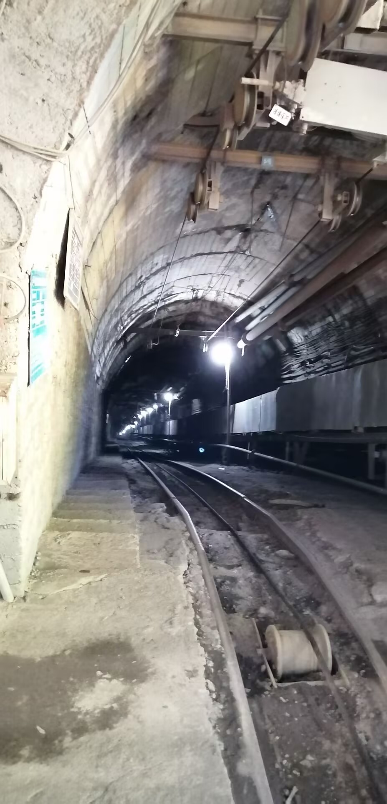
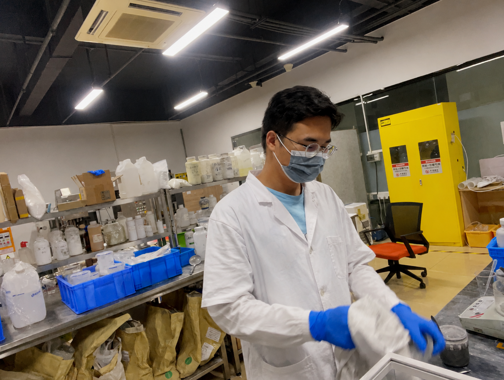
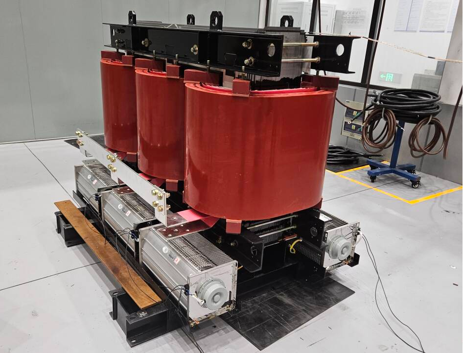
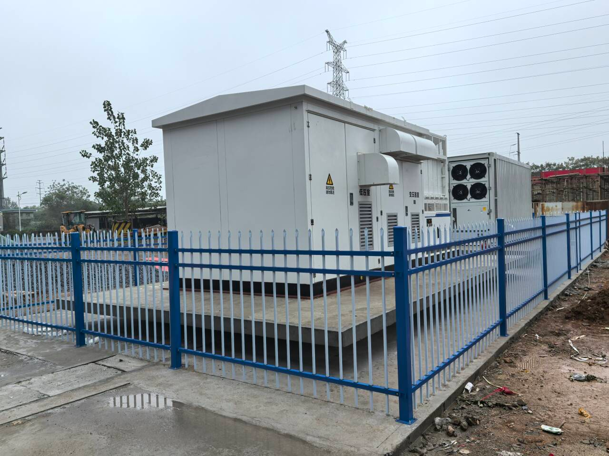
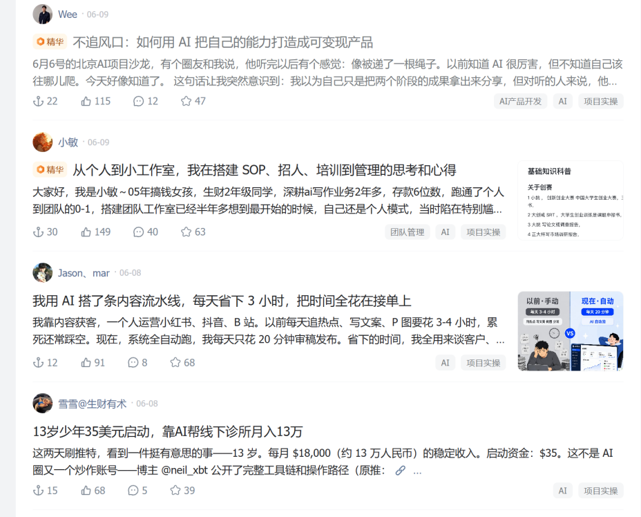
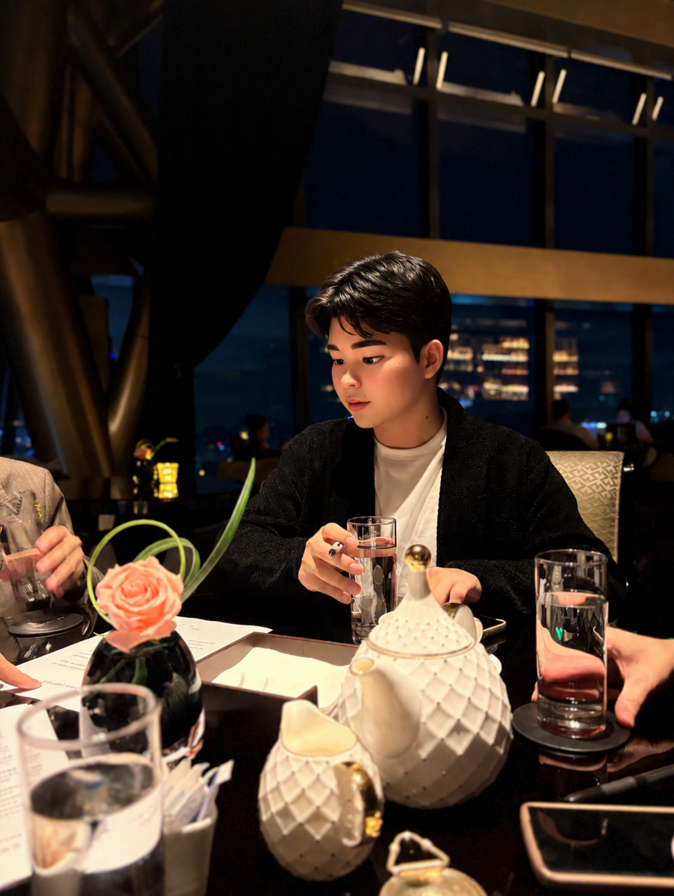

十年前，我和很多人一样，冲着"热门"选择了土木工程专业。那时的土木，火得不亚于今天的 AI。谁能想到，行业变化如此之快，曾经的热门变成了许多人不得不转行的困境。我也曾是那段故事里的一员。
煤矿 400 米下：实习与安全员的日子
真正让我开始怀疑这条路的，是一次煤矿实习。我坐着业内叫"猴车"的简易装置，沿着近 45° 的斜坡，下到 400 米深的矿井。
人悬空在黑暗中，只有扶手、踏板和座椅。第一次下降约 200 米时，那种要坠入深渊的感觉至今难忘。
矿道里没有看到大型风机，空气却流通得惊人，凉风吹过皮肤表面。矿车沿着轨道从左侧上来，空车从右侧下去，中间留给皮带运输机运送煤炭。因为手机可能引发瓦斯爆炸，只能留在井上，所以井下的真实模样，只能刻在脑海里。


走过漫长的运输线，通道只够单向通行。每隔一段，矿道两旁就有专门挖出的避险洞，用钢筋、铁网和水泥加固，用于紧急情况。地底还挖了许多水箱，收集泥土中渗透出来的水。听着滴水声，像面对深不见底的深渊。
煤矿、建筑都属于高风险行业。我做过安全员，名义上负责识别风险，实际上却常常没有实权，更多时候只是事故后的责任人。打交道最多的是施工人员，人员管理已是难题，晚上的酒局更让人疲惫。
那时候我就知道，这不是我想干一辈子的事。
考研：换一条赛道
于是我选择考研，换一个方向。入学时我并不知道会去做材料相关课题——研究生阶段，导师的研究方向往往比专业名称更重要。
材料方向似乎比土木好一些，但深入后才发现，传统材料领域竞争激烈，我们这类跨专业背景并不占优势。于是我把重心放在材料仿真上，走学科交叉路线，反而更容易出成果。
从实验台到电脑屏幕
起初研究的是导热吸波材料，常用于手机和电池，解决散热和电磁波吸收问题。对我来说，这是一个全新的课题，也很有价值。
但越深入越发现，我的兴趣并不在材料本身。实验室里瓶瓶罐罐、有毒溶剂，日复一日。大多数材料专业的就业方向，也集中在工艺或质量岗位。我大概率不会一辈子和材料仪器打交道。


储能行业：风口上的两年
毕业时就业市场已经很难。我投了将近 100 份简历，最终进入了一个之前几乎没听说过的行业——储能。
这份工作和我研究生期间的散热研究很吻合。储能属于新能源，应用场景很广：水库发电需要储存，工业园区需要备用电源，荒漠里的太阳能和风能需要存储，就连如今火爆的 AI 数据中心，也需要毫秒级切换电源来保障训练不中断。
行业高速发展，各大厂商都缺人，找工作不算太难。
但工作两年后，我逐渐看清了其中的局限：岗位内容不断重复，个人只是公司闭环里的一小块切片；前端需求从哪里来，很少能真正看见。时间流逝得飞快，一年好像只过了一个月。
这也让我意识到，职场里同样存在巨大的局限性：岗位替代性高、35 岁危机、缺少自由度。是时候再次做出改变。


AI 浪潮：技术不等于生意
AI 火爆的时候，我和很多人一样，一头扎进去，以为学完 AI 就能赚大钱。
但真正学完后才发现：AI 只是一个放大器。如果本身没有能赚钱的业务，再强的工具也放不大零。
一味追求技术，又一次陷入了和工作相似的循环——学了很多，却无法落地变现。我离商业越来越远，根本不了解市场真正的需求、如何找到顾客、如何做流量。这些都不是技术能直接带来的。

那些看起来"我上我也行"的赚钱项目，背后往往有复杂的流程。对没有商业经验的人来说，并不轻松。商业需要花更多时间去琢磨，只靠技术远远不够。
现在，我想做的事
过去两年，我参加了近 100 场线下活动，认识了各行各业的人。对社会、市场，也对自己，有了更深的理解。
市场需要什么，自己能做什么，渐渐变得清晰。
我终于找到了一件长期值得去做的事：把我和大家的资源链接起来，真正帮助有需求的人。在帮助别人的过程中，也实现自己的价值。
这让我觉得有意义，也充满正能量。
一起遇见更好的自己
从土木到煤矿，从材料到储能，从 AI 到商业，这十年走了很多弯路。但回头再看，每一次转弯都不是浪费，而是在帮我排除"不想成为的样子"。
个人成长的路上，我会继续学习、复盘、总结。也期待能和你一起，遇见更好的自己。
